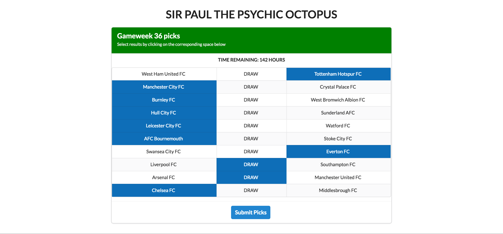

How to use the app
Make sure you use Google Chrome to run the app. The website could perform incorrectly in other browsers
Make your Picks
Every row in the picks section represents a game. To select your picks, click on the space with the name of the team that you think is going to win. If you think the game will end in a draw, then select the space with the text "DRAW".
Once you are ready to submit your picks, simply click on the button that says "Submit Picks". If everything goes well, a message will pop up letting you know that your picks were successfully submitted.
You can always go back and change your picks as long as you do it before the day the gameweek starts. The section includes a timer that will let you know how many hours you have before you are no longer able submit your picks for that gameweek.
Deadline for picks is the start of the first game of the gameweek. Once the first game starts, all picks will be locked in
By default, all picks are set to "DRAW". This means that if you forget to make your picks before the deadline, you will automatically pick "DRAW" for every game.
Points and Standings

In order to check the current standings, click on the "Standings" section. This section will show you a table with all the players ranked by their total points. You can also sort the table by clicking on a specific column's title
Everyone's Picks

Once a gameweek starts, you can check the rest of the player's picks. Simply click on the "Everyone's Picks" section and a new tab will open with a table showing all users and their picks. Each row represents a user and their picks and each column represents a game. If a player's pick is correct, the corresponding space will be highlighted in blue.
Check your weekly performance

Clicking on the "Weekly Points" section will open a pop up with a graphical representation of your weekly points as well as the league average weekly points
News and Analysis Section

As a bonus, we have decided to add an analysis section which includes the current Premier League standings as well as a news feed section with current news for every team. To see if there are news on a specific team, just click on the corresponding team's badge.
Rules and payout
Rules
Submit picks each week prior to the start of the first game of the week. After the first game of the week begins, all picks for that week will be locked in. Picks default to all draws each week if no picks are submitted.
Scoring
Each correct pick is worth one point. No points for incorrect picks.
Pool Fees
$75 for an entry. Pay Mike Tagtow at the beginning of the season.
Payouts
Payouts will be made to the top 5 finishers as well as the Manager of the Month. Payouts will be paid at the end of the season.
Detail -- At the end of the season, the top 5 finishers plus ties in overall season points will be paid. Actual payout amounts will be posted after the first week of the season.
Starting the first month of the season, the manager(s) with the top points each month will receive the Manager of the Month award. Points are awarded when the game is actually played (not scheduled). For example, if a game was scheduled for February but played in April, any points will apply towards the April Manager of the Month totals. Manager of the Month is awarded from August through May. Payouts for Manager of the Month will be determined after the first week of the season.
Pool Contacts
Mike Tagtow – mtagtow@eksh.com - 303-579-2016
Ricardo Paulin – rpaulin1990@gmail.com - 823-845-4966